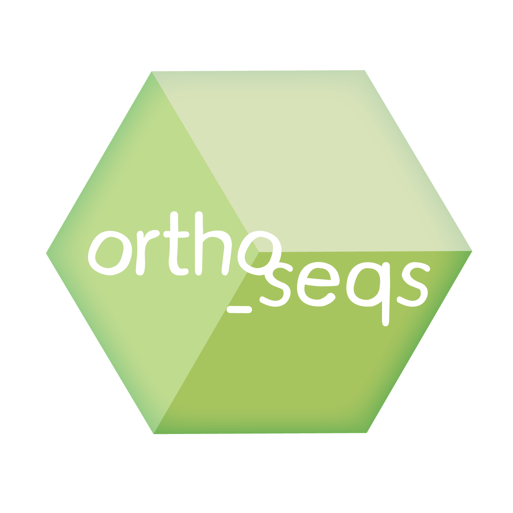

My research interests, advisors, and projects are all on this page.
Active Research Interests: Computer Experiments, Experimental Design, Gaussian Processes, Hyperparameter Estimation
What is a Gaussian Process?
| Dissertation Advisor
Dr. Jonathan Stallrich Website |
Dissertation Committee Members: Dr. Sujit Ghosh (Website) Dr. Erin Schliep (Website) |
|  | Saba Nafees, Venkata Naga Pranathi Vemuri, Miles Woollacott, Ahmet Can Solak, Phoenix Logan, Aaron McGeever, Olivia Yoo, and Sean H. Rice. “Ortho_seqs: A Python Tool for Sequence Analysis and Higher Order Sequence–Phenotype Mapping.” bioRxiv, January 1, 2022, 2022.09.14.506443. https://doi.org/10.1101/2022.09.14.506443. |